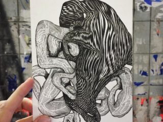

Художник Андрей Бергер родился в Барнауле, а рисовать в среде своего города начал ещё в возрасте 13 лет. Он известен не только достаточно узнаваемыми абстрактными произведениями, но и созданием платформы FGA, которая выполняет коммуникационную миссию. С её помощью бизнесмены могут найти художников, которые нацелены на то, чтобы сделанные по заказу произведения всё равно оставались бы произведениями искусства. Бренды же получают возможность установления диалога с представителями целевой аудитории, которые способны отличать стилизованные под граффити вывески от реального уличного искусства.
От начала XXI века…
Родился Андрей Абер, тогда ещё Бергер, в 1986 году, а увлечение сформировалось в самом начале 21-го века, когда широкого распространения информации о том, что такое стрит-арт ещё не наблюдалось. Вдохновение черпалось в журнальных фотографиях, фильмах и книгах, которые непосредственного отношения к уличному искусству не имели. Однако увлечение оказалось до такой степени серьёзным, что повлияло на выбор профессии. Андрей стал профессиональным архитектурным дизайнером.
Позже художник переехал в Новосибирск, где познакомился с Маратом Мориком. Вместе они создали множество произведений в России и во всём мире. Они же являются одними из организаторов и вдохновителей фестиваля Paint Methods. Самый первый его творческий раунд прошёл в 2007 году в Красноярске, а следующий в Барнауле. Характерно, что и начало творческого пути в детстве и первые шаги в мире относительно большого граффити проходили на голом энтузиазме. Исключения составляли лишь разовые коммерческие заказы. К примеру, совсем молодым Андрей разрисовал киоск местного бизнесмена и получил за это 3 тыс. рублей.
Стиль художника
Андрей Бергер (Абер) отличается проработкой деталей и стремится к синтезу граффити и абстрактного рисунка. Он всегда был далёк от стандартного понимания граффити как райтинга. Какие-то надписи встречались в его произведениях лишь в самом начале пути. Впоследствии он практически полностью от них отказался и стал художником линий. По его мнению, сибирские школы граффити, к которым он имеет непосредственное отношение, появлялись в наиболее благоприятных условиях.

Каждая достойная работа создавалась без серьёзного сопротивления городских властей и местных жителей. Она становилась событием в жизни артистов уличной сцены, и они подолгу прорисовывали то, что в других городах обычно делается на скорую руку. В картинах Андрея преобладают тёмные и серебристые тона, а шрифт, если он всё же имеет место быть, всегда «утопает» в линиях, изгибах и переходах.
Деньги за настоящее творчество
Чем занимается Андрей Бергер в настоящий момент? Справедливым будет такой ответ на этот вопрос: стремится осуществить мечту. Можно даже добавить, что великую мечту — превратить своё творческое увлечение в источник дохода. Именно за тем и создано «Первое граффити-агентство» FGA. Обосновался он в Москве, а сущность его подхода — это создание произведений под заказ, но без превращения искусства в коммерческую деятельность. Художник продолжает оставаться собой, не прогибается под видение заказчиком того, какими должны быть его произведения.


.png)